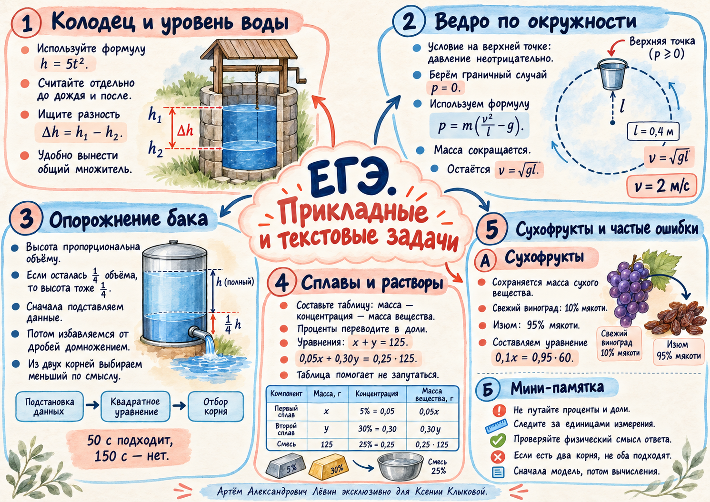

00 Математическая модель
В прикладной задаче вычисления начинаются с величин и их смысловых связей. Прежде чем решать уравнение, укажите, какие значения неизвестного возможны в описываемой ситуации.
- Назовите искомую величину и переведите единицы.
- Запишите формулу, таблицу или систему.
- Получите алгебраические значения.
- Подставьте результаты и отберите допустимые.
01 Подъём воды в колодце
Для падения без начальной скорости при g = 10 м/с² используем зависимость высоты от времени.
До дождя камень падал 1,3 секунды, после — 1,1 секунды. Разность путей равна подъёму воды.
Быстрый приём: разность квадратов раскладываем как (a − b)(a + b).
02 Ведро по окружности
На верхней точке траектории для удержания воды нужен неотрицательный контактный нажим. Его граничное значение равно нулю.
Масса воды положительна, поэтому граничное условие даёт v² = gL. При L = 0,4 м минимальная скорость 2 м/с. Скорость — неотрицательный модуль; отрицательный корень отбрасывается.
03 Когда в баке останется четверть?
Высота воды в баке с постоянной площадью сечения пропорциональна её объёму: если объём составил ¼ начального, высота также составит ¼.
При H₀ = 20 м, k = 1/50, g = 10 м/с² требуется H = 5 м. После подстановки и умножения уравнения на 500 получаем:
Корни: 50 с и 150 с.
Вся вода вытекает к 100-й секунде. Время 150 секунд лежит за границей процесса; ответ — 50 секунд.
04 Сплавы и баланс вещества
Каждую концентрацию в процентах переводим в долю. Масса чистого компонента: масса сплава × массовая доля.
| Сплав | Общая масса, кг | Доля никеля | Никель, кг |
|---|---|---|---|
| Первый | x | 0,05 | 0,05x |
| Второй | y | 0,30 | 0,30y |
| Смесь | 125 | 0,25 | 0,25 · 125 |
Решив систему, получаем x = 25 кг, y = 100 кг. Обязательно проверьте обе суммы: массу сплавов и массу никеля.
Если известна разность масс, удобно обозначить их x и x + 3. Для сплавов с 10% и 40% меди, дающих смесь 30%, выходит 3 кг и 6 кг.
05 Виноград превращается в изюм
При высушивании испаряется вода. Для составления уравнения берём массу сухого вещества: она сохраняется.
На 60 кг изюма требуется 570 кг свежего винограда. Проверка: сухого вещества до и после ровно 57 кг.
06 Контроль ошибок
- Перевёл сантиметры в метры, проценты в доли.
- Указал, какая величина сохраняется.
- Домножил каждое слагаемое уравнения на общий знаменатель.
- Проверил знаки, дискриминант и все найденные корни.
- Для времени нашёл конец физического процесса.
Алгебра даёт кандидатов. Условие задачи определяет ответ.
07 Тренировка — Путь А
10 задач из чек-листа. Сначала решите самостоятельно; откройте проверку после вычислений.
- До дождя падение в колодец длилось 1,5 с, после — на 0,1 с меньше. Найдите подъём воды при h = 5t².
Ответ и контроль
1,45 м. Проверьте: 5(1,5² − 1,4²). - Время падения в колодец уменьшилось с 1,8 с до 1,5 с. Найдите подъём воды при g = 10 м/с².
Ответ и контроль
4,95 м. Разность двух квадратов времён. - Длина верёвки ведра 90 см. Какова минимальная скорость в верхней точке при g = 10 м/с²?
Ответ и контроль
3 м/с. Используйте v = √(gL). - В верхней точке скорость ведра 5 м/с. Какова наибольшая длина верёвки при g = 10 м/с²?
Ответ и контроль
2,5 м. Условие L ≤ v²/g. - По модели бака из раздела 03 H₀ = 20 м, g = 10 м/с², k = 1/40. Через сколько секунд останется ¼ объёма?
Ответ и контроль
40 с. Бак опорожняется за 80 с. - Та же модель бака: H₀ = 45 м, g = 10 м/с², k = 1/30. Когда останется 1/9 объёма?
Ответ и контроль
60 с. Второй корень 120 с выходит за предел опорожнения 90 с. - Сплавы с 5% и 30% никеля смешали в 100 кг сплава с 20% никеля. Найдите массы исходных сплавов.
Ответ и контроль
40 кг и 60 кг. Проверьте два баланса. - Сплавы с 15% и 45% меди. Второй тяжелее первого на 4 кг; в смеси 35% меди. Найдите массу смеси.
Ответ и контроль
12 кг. Массы: 4 кг и 8 кг. - Из 300 кг винограда с 86% воды получили изюм с 16% воды. Найдите массу изюма.
Ответ и контроль
50 кг. Сухое вещество: 0,14 · 300 = 0,84 · m. - Виноград содержит 90% воды, изюм — 5%. Сколько винограда нужно для 38 кг изюма?
Ответ и контроль
361 кг. Баланс: 0,10x = 0,95 · 38.
08 Материалы и исследование
Акварельная ментальная карта собирает в одну схему все пять сюжетов занятия.


В цифровой лаборатории можно менять время, наблюдать уровень воды и график, а затем проверить физическую допустимость корней.